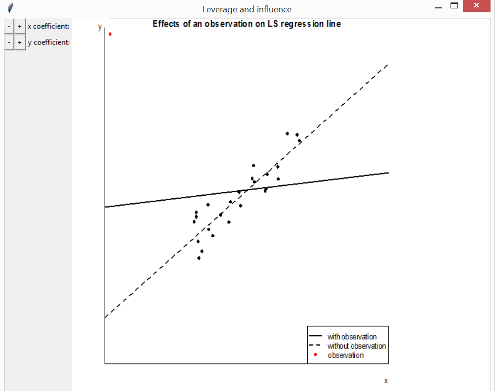

An overview of smovie
Paul Northrop
2026-01-21
Source:vignettes/smovie-vignette.Rmd
smovie-vignette.RmdThe smovie package provides movies to help students to understand statistical concepts. The rpanel package (Bowman et al. 2007) is used to create interactive plots that move in response to changes in parameter values. Buttons that can be held down in order to animate the plots. This vignette provides an overview of the movies that are available currently, using screenshots from the movies. Any comments, or suggestions for further movies, are gratefully received.
The function movies creates a panel from which examples
of the movies can be launched. It is based on the function
rp.cartoons in the rpanel package, and the image
that appears in this panel has been taken from there. These examples
have been set up with sensible default arguments.
library(smovie)
#> Loading required package: rpanel
#> Loading required package: tcltk
#> Package `rpanel', version 1.1-5: type help(rpanel) for summary information
movies()For greater control of an individual example call the relevant
function directly. These functions have an argument
panel_plot that controls whether the movie appears in
inside the panel (TRUE) or in the standard graphics window
(FALSE). The default is TRUE, partly because
my experience is that holding down buttons to animate the plots works
better in this case.
Probability distributions
The functions discrete and continuous
create interactive plots to illustrate how the behaviour of some common
probability distributions depends on their parameter values. There are
buttons to change the parameter values and to switch between displaying
the p.m.f./p.d.f. and the c.d.f. These functions also allow you to
provide their own distribution. If you are calling discrete
or continuous directly it may be useful to use the argument
var_support (for discrete) or
var_range (for continuous) to fix the scale on
the horizontal axis in order better to see the effects of changing the
parameter values. Otherwise, for some of the distributions, the scale on
the horizontal axis will react to changes in the parameters and mask the
effects of any changes in location and scale parameters.
Discrete distributions
discrete(distn = "binomial")
Sampling distributions
Three movies illustrate the general idea of the sampling distribution of a statistic.
Central Limit Theorem
Consider \(n\) independent and identically distributed random variables \(X_1, \ldots, X_n\), each with mean \(\mu\) and finite variance \(\sigma^2\). Let \(\bar{X} = (1/ n) \sum_{i=1}^n X_i\). The (classical) Central limit theorem (CLT) states that as \(n \rightarrow \infty\) \(\sqrt{n}(\bar{X} - \mu) / \sigma\) converges in distribution to a standard normal N(0, 1) distribution. Therefore, the mean of a sufficiently large number of such variables has approximately a N(\(\mu, \sigma^2/n\)) distribution.
The function clt can be used to illustrate the
convergence of the distribution of the sample mean to a normal limit.
Several continuous and discrete distributions for the underlying
variables are available. There are buttons to change the value of \(n\) and to simulate another sample of size
\(n\). As the simulations progress a
histogram of the sample means can be compared to the normal
approximation to the sampling distribution.
clt(distn = "exponential")
clt(distn = "poisson")
Central Limit Theorem for sample quantiles
A similar limit theorem holds for sample quantiles. Suppose that we are interested in the limiting distribution of the \(100p\%\) sample quantile of independent and identically distributed random variables, each with probability density function \(f\) and \(100p\%\) quantile \(\xi(p)\). The limiting distribution is normal with mean \(\xi(p)\) and standard deviation \(\sqrt{p(1-p)} / n f(\xi(p))\), provided that \(f(\xi(p))\) is positive. See Lehman (1999) for details.
The function cltq illustrates this theorem, based here
on samples from a gamma(2, 1) distribution.
cltq(distn = "gamma")
Extremal Types Theorem
The Extremal Types Theorem is rather like the CLT but applied to the sample maximum instead of the sample mean. Loosely speaking, it states that, in many situations, the maximum of a large number \(n\) of independent random variables has approximately a Generalized Extreme Value (GEV) distribution with shape parameter \(\xi\). See Coles (2001) for an introductory account of extreme value theory.
The function ett can be used to illustrate the
convergence of the distribution of the sample maximum to a GEV limit.
Several continuous distributions for the underlying variables are
available corresponding to different values of the limiting shape
parameter \(\xi\). ett
works in essentially the same way as clt except that the
exact sampling distribution of the sample maximum is also displayed.
ett(distn = "exponential")
Mean vs median
The function mean_vs_median produces a movie to compare
the sampling distributions of the sample mean and sample median based on
a random sample of size \(n\) from
either a standard normal distribution or a standard Student’s \(t\) distribution.
If we sample from a standard normal distribution then the sample mean has the smaller sample variance, as illustrated in the following movie.

If we sample from a Student’s \(t\) distribution with 2 degrees of freedom then the next movie reveals that the sample median has the smaller sampling variance.
mean_vs_median(t_df = 2)Product Moment Correlation Coefficient
The function correlation illustrates the sampling
distribution of the product moment correlation coefficient, under
sampling from a bivariate normal distribution. There are buttons to
change the values of \(n\) and the true
correlation \(\rho\) and to simulate
another sample of size \(n\). A
histogram of the sample correlation coefficients is compared to the
exact pdf of the sampling distribution. There is also an option to
switch to a display of Fisher’s
\(z\)-transformation \([\ln(1+\rho) - \ln(1-\rho)] / 2\). Then the
histogram can be compared both to the exact distribution and to a normal
approximation to this distribution.
correlation(rho = 0.8, n = 30)

Regression
Leverage and influence
The function lev_inf creates a plot to visualise the
effect on a least squares regression line of moving a single
observation, in order to illustrate the concepts of leverage and
influence. In the first plot below the effect of increasing the \(y\)-coefficient of the red observation is
far greater when the \(x\)-coefficient
is far from the mean \(x\)-coefficient
of the other observations.
lev_inf()
Hypothesis Testing
Two movies illustrate key concepts in hypothesis testing.
wws compares three test statistics (Wald, Wilks and Score)
based on the log-likelihood. See Azzalini
(1996) for details. shypo illustrates the concepts
of type I and type II errors, using as an example a test of simple
hypothesis about the mean, against the general alternative, based on a
random sample from a normal distribution with known variance.
Wald, Wilks and Score test statistics
The function wws shows the differing ways in which these
three test statistics measure the distance between the maximum
likelihood estimate of a scalar parameter \(\theta\) and the value \(\theta_0\) under a null hypothesis. There
are buttons to change the value of \(\theta_0\), select which test statistic to
display and to add the values of the test statistics and the associated
\(p\)-values of the test of the null
hypothesis that \(\theta = \theta_0\).
The example below is based on a sample from a binomial(\(20, \theta\)) distribution in 7 successes
and 13 failures are observed. An example based on a normal distribution
is also available. You may also specify your own log-likelihood.

Testing a simple hypothesis: normally distributed variables
Consider a random sample \(X_1, \ldots, X_n\) from a normal distribution with unknown mean \(\mu\) and known variance \(\sigma^2\). We test the null hypothesis \(H_0: \mu = \mu_0\) against the alternative \(H_1: \mu = \mu_1\), where \(\mu_1 > \mu_0\). Let \(\bar{X} = (1/n) \sum_{i=1}^n X_i\). We reject the null hypothesis if \(\bar{X} > a\). The type I error \(\alpha\) = \(P\)(reject \(H_0\) | \(H_0\) true). The type II error \(\beta\) = \(P\)(don’t reject \(H_0\) | \(H_1\) true).
The function shypo creates plots of the normal pdfs
under \(H_0\) and \(H_1\) and of the type I and II errors as a
function of the critical value \(a\).
Buttons are used to change the values of \(n\), \(a\), \(\mu_0\), \(\mu_1
- \mu_0\) (the effect size eff) and the population
standard deviation \(\sigma\), in order
to observe the effects on \(\alpha\)
and \(\beta\). Also included are two
radio buttons. One sets automatically the value of \(a\) for which a target type I error equal
to is achieved. The other sets automatically the combination of \(a\) and (integer) \(n\) for which the target type I error
target_alpha and type II error target_beta are
achieved or bettered.
# 1. Change a (for fixed n) to achieve alpha <= 0.05
# 2. Change a and n to achieve alpha <= 0.05 and beta <= 0.1
shypo(mu0 = 0, eff = 5, n = 16, a = 2.3, delta_a = 0.01)